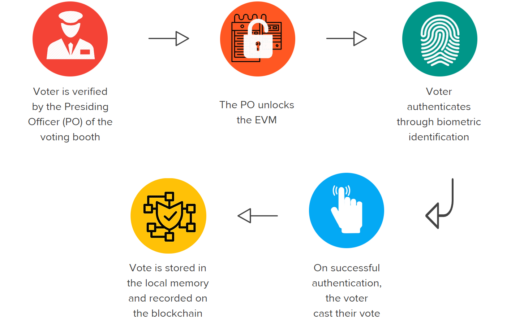

The election commission of India talks of existing EVMs as "perfect" and "infallible" however no verifiable arguments supported these claims.
No cryptography systems built into the system, no information available on the security of the local storage of the existing EVMS.
Largely manual technique for voter authentication, this gives way to human errors and allows malpractices to seep in, as is evident.
India has been a model country with respect to having a 100% electronic voting process and its high time that these problems be addressed by a new state of the art system.
Data Immutability: The votes once cast, should be immutable i.e there should be no scope of change in the attributes of the vote once it has been cast.
Security: The system must be built with iron clad security features.
Reliability: The system must be robust enough to continue providing full functionality even in case of anomalies like power failure or network failure.
Scalability: The system must be capable enough to handle even national elections that are carried out in a single phase. It must have concurrency control mechanisms to handle large amount of concurrent requests.
When we had finalized the architecture of our system at an abstract level it was as depicted by the diagram below. Each EVM (Electronic Voting Machine) would be connected to a blockchain network. Every vote that would be cast on an EVM would be first encrypted, then stored locally and would finally be pushed onto the blockchain. The presiding officers would be able to monitor the network and would be alerted instantaneously of discrepancies, if any.
The components of our EVM as depicted in the figure were:
Biometric authentication: With the advent of the Aadhar identification in India, ensuring that only legitimate citizens are able to vote was quite simple. Every voter would be required to authenticate themselves in order to vote. The fingerprint sensor of our system would be responsible for this.
Touch-based GUI: We decided to replace the current button-based system with a touchscreen GUI. This had a couple of benefits. The most major being that we no longer relied on the underlying wiring to ensure that each voting button cast a vote to the correct candidate but would instead be dependent on the underlying code. Another positive side effect of this was being able to display the GUI in a particular regional language.
Authentication System: THis is a back-end system component that would be responsible for all Aadhar related authentication communications. It would be running inside a Linux system.
Blockchain framework: Once a vote has been casted, the blockchain fraework would be responsible for reflecting that onto the shared ledger. This too would be running inside a Linux system.
Hardware: For our prototype, we used a Pi Zero that allowed us to develop this system relatively quickly and cheaply.

We were a team of 4 people, Each of us were driven and passionate about this project so we hit it off really well. Blockchain was a foreign concept to us. We were essentially starting from scratch and had 9 months to develop this. Once we had brainstormed and finalized the objectives of our solution, we had to pick a blockchain framework to move forward with. This was a dilemma, so we decided to split into groups of 2, each group would pick a framework and completely understand and implement a smaller version of our prototype in it. Once that was done, we evaluated each of our results to pick the framework that we felt would suit our needs better and went ahead with the rest of the development. I worked with Hyperledger Fabric and was responsible for developing the front-end of the voting unit. Hyperledger Fabric uses Go as its programming language so I had to read up and get familiar with it. The GUIs were written from scratch using plain HTML, CSS, and JS. Bootstrap 4 made it easier to get the content organized.